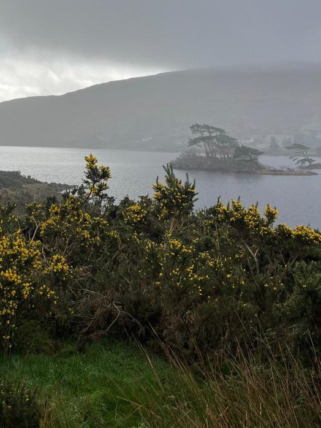
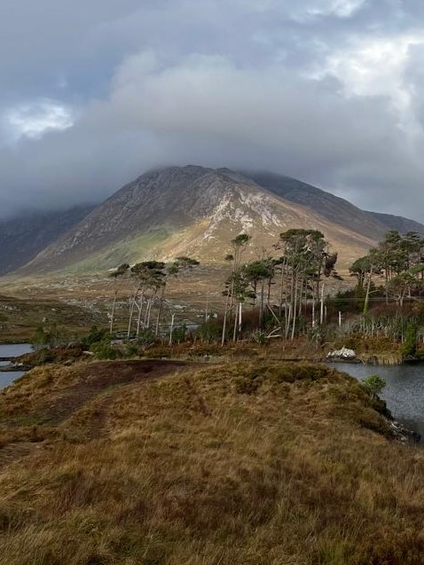
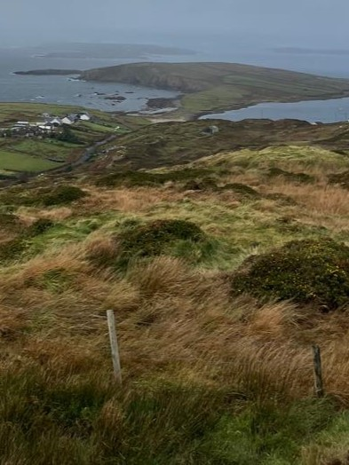

Grassland Plains
Open vistasSunlit plains host grazing mammals, ground‑nesting birds. Late afternoon tours reveal silhouettes against amber skies.
Amuay Wildlife Park is a protected nature reserve about 350 km west of the city, spanning 72 km² of grassland, rolling hills, and marshes. Guided tours along designated dirt tracks offer an intimate encounter with Venezuela’s wild heart. And the best part? we dont disturb the life it shelters.
Watch herons lift from misty marshes at dawn, listen to howler monkeys echoing across the hills. Trace the footsteps of grazing deer against a backdrop of coastal grasslands, Watch the sloths lazing about. Every tour follows carefully mapped tracks to safeguard both visitors and wildlife.
Begin with Caracas’s three signature habitats. Each supports distinct wildlife and plant communities that can be explored on themed tours.

Sunlit plains host grazing mammals, ground‑nesting birds. Late afternoon tours reveal silhouettes against amber skies.

Gentle slopes create pockets of shade and shelter, attracting small mammals, reptiles. Viewpoints along tour routes offer sweeping vistas over the reserve.

Marshes form Caracas’s lifeblood: quiet waters, reeds, and muddy shallows attract wading birds, amphibians, and countless insects, making this a hotspot for biodiversity.
This website is designed to help you appreciate Caracas’s ecosystems, understand why traffic is restricted to scheduled tours, and prepare for a respectful, low‑impact visit.